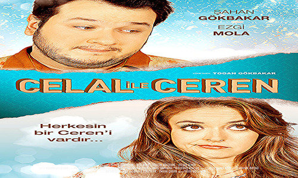
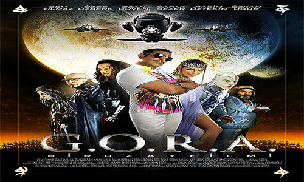
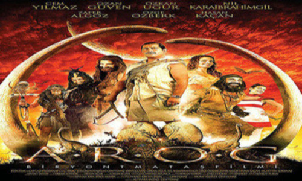
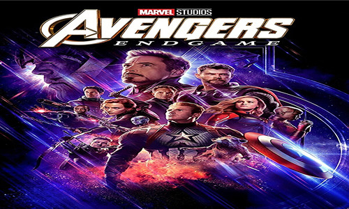
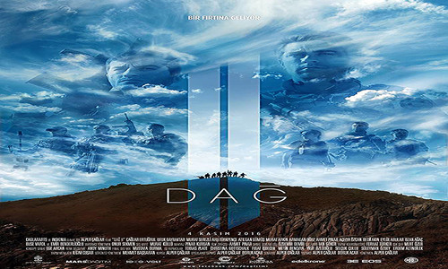
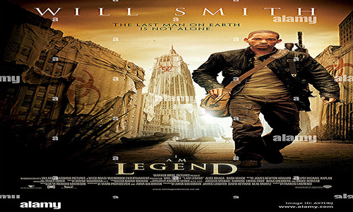

04 haziran 2022 Sinemada / 1s 54dk / Komedi
CELAL İLE CEREN
04 haziran 2022 Sinemada / 1s 54dk / Komedi
Yönetmen Togan Gökbakar
Senarist Şahan Gökbakar
Oyuncular: Şahan Gökbakar , Ezgi Mola , Gökcen Gökçebağ
Özet
30'lu yaşlarını süren Celal, Karaköy'de baba mesleğini sürdüren bir elektrikçidir. 30 yaş krizine yeni girmiş olan Ceren ise mobilya mağazasında çalışmaktadır. İkilinin uzun beraberliği ise 6 yıla dayanmıştır! Çevresindekiler artık evleneceklerini varsayarlar. Fakat Celal bir arkadaşının bekarlığa veda partisine gitmek isteyince ikili feci tartışır ve bozuşurlar. Ceren gitmesini istemese de, Celal kırk yalanla bir yolunu bulur ve partiye gider. Olay ortaya çıkınca Ceren ayrılmak ister; onu hala sevse de amacı biraz sevgilisinin burnundan getirmektir. Fakat hiç beklemediği biçimde evlilik baskısı altında kalmaktan şikayet eden Celal bir anda Ceren'i terk eder! Hayatının çoktan daha güllük- gülistanlık olacağını sanırken bekarlık günlerinde belalar da peşini bırakmaz. Ceren'i özleyeceği günler yakındır.... Başrollerini ünlü komedyen Şahan Gökbakar ve Ezgi Mola'nın paylaştığı Celal ile Ceren, Recep İvedik serisinde beraber çalışan yönetmen Togan Gökbakar ve Şahan Gökbakar Kardeşler'in yeni komedi projeleri.

04 haziran 2022 Sinemada / 2s 7dk / Bilimkurgu , Komedi
G.O.R.A
04 haziran 2022 Sinemada / 2s 7dk / Bilimkurgu , Komedi
Yönetmen Ömer Faruk Sorak
Senarist Cem Yılmaz
Oyuncular: Cem Yılmaz , Özge Özberk , Ozan Güven
Özet
Kurnaz ve genç bir adam olan Arif, bir kasabada halı satarak yaşamını sürdürmektedir. Genelde yaşadığı bölgedeki insanlar, kendisini hafif üç kağıtçı bir tip olarak bilirler. Bir gün Arif’in dükkanına gelen yabancı müşteriler, ona hayal bile edemeyeceği bir deneyim yaşatır. Gelenler aslen uzaylılardır ve bu uzaylılar tarafından kaçırılan Arif, bambaşka bir gezegene götürülür. Arif, karakterine uygun bir biçimde bu gezegenden kaçıp kurtulabilmenin türlü yollarını aramaya başlar. Ancak yaşayacağı maceralar, onun bu gezegende aşk ile burun buruna gelmesine de neden olacaktır. Cem Yılmaz’dan kahkaha dolu dakikalar.

04 haziran 2022 Sinemada / 2s 7dk / Komedi , Fantastik
A.R.O.G
04 haziran 2022 Sinemada / 2s 7dk / Komedi , Fantastik
Yönetmen Cem Yılmaz , Ali Taner Baltacı
Senarist Cem Yılmaz
Oyuncular: Cem Yılmaz , Özge Özberk , Charles Carroll
Özet
Gerek rahmetli Sadri Alışık'ın Turist Ömer'ine yaptığı saygılı ve zeki göndermelerle, gerekse de Uzay Yolu, Starwars, Flintstone benzeri kült yapımların parodilerini Türk tipi uzay filmi konseptine çevirebilmesindeki becerisiyle, Cem Yılmaz'ın çektiği hemen her filmin fenomen haline gelmesi adeta sıradan bir durum haline geldi. İşte, Ali Taner Baltacı ile Cem Yılmaz'ın yönettiği A.R.O.G: Bir Yontmataş Filmi de, Fida Film CMYLMZ Fikirsanat tarafından vizyona çıkarıldığında sinemaseverlerin büyük ilgisi ile karşılaştı. A.R.O.G.'un ilk 3 dakika'sının çekimleri İstanbul Film Stüdyolarında hazırlanan özel dekorlarda gerçekleşti. Filmde kullanılan yaratık için Anima stüdyolarında pek çok sayıda maket çalışması yapıldı. Uzaktan kumanda ile hareketli hazırlanan yaratığın modellemesi ve üretimi toplam iki ay sürdü. Filmde, G.O.R.A gezegeninde tutsak olan Arif’e büyük kin besleyen Komutan Logar, onu zaman makinesiyle bir milyon yıl öncesine gönderir. Taş Devri insanları, dinozorlar ve prehistorik kuşların yer aldığı komedide Arif’in komik serüvenleri tüm hızıyla devam etmekte.THE BATMAN
04 haziran 2022 Sinemada / 2s 57dk / Aksiyon , Polisiye , Gerilim
Yönetmen Matt Reeves
Senarist Matt Reeves , Peter Craig
Oyuncular: Robert Pattinson , Zoë Kravitz , Paul Dano
Özet
The Batman, suçluların kalplerine korku salan Batman'in Riddler isimli bir seri katille mücadelesini konu ediyor. Batman olarak iki yıl sokaklarda dolaşmak ve suçlulara korku salmak Bruce Wayne'i Gotham City'nin karanlığının kalbine sürükledi. Gizemli bir seri katil Riddler, şehrin seçkinlerini hedef alıp bir dizi sadist ve hain saldırı gerçekleştirdiğinde Batman, Riddler'in izini sürmeye başlar. İpuçlarınını peşinden giden Batman'in yolu bu süreçte Catwoman olarak bilinen Selina Kyle, Penguen olarak da bilinen Oswald Cobblepot ve Carmine Falcone gibi karakterlerle kesişir. Batman kurduğu yeni ilişkilerin de yardımıyla suçluların maskesini düşürmek ve Gotham Şehri’ni eski huzuruna kavuşturmak için zorlu bir mücadeleye girişir..jpg)
SPIDER-MAN NO WAY HOME
04 haziran 2022 Sinemada / 2s 28dk / Aksiyon , Macera , Fantastik
Yönetmen Jon Watts
Senarist Chris McKenna , Erik Sommers
Oyuncular: Tom Holland , Zendaya , Benedict Cumberbatch
Orijinal adı Spider-Man: No Way Home
Özet
Örümcek-Adam Eve Dönüş Yok, kimliği açığa Örümcek-Adam'ın, sırrını geri vermesi için Doktor Strange'den yardım istemesiyle birlikte yaşananları konu ediyor. Örümcek-Adam'ın kimliği ifşa edilerek onun ve sevdiklerinin hayatı, halkın gözü önüne serilir. Kendisini büyük bir kaosun ortasında bulan Peter, aynı zamanda suç ortakları olarak lanse edilen MJ ve Ned'in hayatının da olumsuz etkilenmesine şahit olur. Arkadaşların üniversiteye girme şanslarının yok olmasına seyirci kalmak istemeyen Peter, sırrını geri vermesi için Doktor Strange'den yardım ister. Peter'ın yakarışından etkilenip ona yardım etmeyi kabul eden Strange, Unutma Büyüsü'nü yapmaya başlar. Ancak bu büyü, MJ, Ned, May ve Happy'nin de Örümcek-Adam'ın kim olduğunu unutmasına neden olacaktır. Arkadaşlarının kim olduğunu hatırlamasını, diğer kişilerin unutmasını isteyen Peter, Strange büyüyü yaparken parametreleri değiştirir. Ancak bu durum beklenmedik olaylara neden olur.

04 haziran 2022 Sinemada / 3s 1dk / Aksiyon , Fantastik , Macera
AVENGERS
04 haziran 2022 Sinemada / 3s 1dk / Aksiyon , Fantastik , Macera
Yönetmen Joe Russo , Anthony Russo
Senarist Christopher Markus , Stephen McFeely
Oyuncular: Robert Downey Jr. , Chris Evans , Mark Ruffalo
Özet
"Avengers Infinity War"un ardından pek çok süper kahraman küle dönüşmüştür. Doktor Strange, Gamora, Drax, Mantis, genç Örümcek Adam, Black Panther, Bucky Barnes, Groot, Scarlet Witch, Vision, Star Lord, Maria Hill, The Wasp ve Nick Fury gibi pek çok kahraman, Thanos'un Sonsuzluk Eldiveni'ni ele geçirmesi ve kendi dengesini kurması yüzünden yok olmuştur ve dünya umutsuz haldedir. Dünya üzerinde kalan Black Widow, Kaptan Amerika, Thor ve Hulk kendi yaslarını tutmaktayken, Iron ve Nebula ise kontrol edemedikleri bir uzay gemisinin içinde, uzay boşluğunda sürüklenmektedirler. Süper kahramanlar takımı için işler pek de iyi görünmemektedir. Ancak Kuantum Bölgesi'nden çıkmanın bir yolunu bularak Avengers ekibinin kalan üyelerine giden Ant-Man, yeni bir umut ışığı olacaktır. Daha önce var olduğunu bilmedikleri bölgeler, kahramanlar ve evrenlerin varlığını öğrenen ekip, Thanos'un kurduğu bu çarpık dengeyi değiştirmek ve kendilerinden alınanı geri getirmek için hayatlarının en büyük mücadelesine girişeceklerdir. Hepsi kişisel olarak önem verdikleri şeyleri kaybetmiş olan kahramanlarımız için intikam vakti gelmiştir.
BABAM VE OĞLUM
04 haziran 2022 Sinemada / Dramatik komedi
Yönetmen Çağan Irmak
Senarist Çağan Irmak
Oyuncular: Fikret Kuşkan , Hümeyra , Özge Özberk
Özet
Babam ve Oğlum'da, 12 Eylül darbesinin yıktığı hayatlardan birinde yetişmektedir küçük Deniz. Annesini henüz doğmadan önce kaybetmiş, bir gazetede yazar olarak çalışan babası tarafından mütevazi bir evde yetiştirilmiştir. Babası dışında tanıdığı tek bir akrabası bile yoktur. Taki babası Sadık, bir gün Deniz'i şaşırtacak bir haberle gelene kadar... Deniz artık babasıyla birlikte, hiç görmediği dedesinin yanında, küçük bir kasabada yaşayacaktır. Köye vardıklarında Sadık yıllar önce küstüğü babasını ilk kez görüyordur. Aralarındaki bu üskünlük kolay kolay geçecek cinsten bir durum değildir. Sadık'ın dönüş sebebini anlamlandıramayan aile bir yandan çok mutluyken diğer yandan tedirgindir de. Zamanla Deniz bu hiç görmediği ailesine alışırken ve her şey düzelmeye başlamışken yaşanan bir dram herkesi derinden etkileyecektir. Son dönem sinemamızın en dokunaklı filmlerinden biri olarak kabul gören Babam ve Oğlum kendi türünde klasikleşmeye aday filmlerden biri.İNCİR REÇELİ
04 haziran 2022 Sinemada / 1s 35dk / Romantik , Dram
Yönetmen Aytaç Ağırlar
Senarist Aytaç Ağırlar
Oyuncular: Halil Sezai Paracıkoğlu , Melike Güner , Sinan Çalışkanoğlu
Özet
Masal gibi başlayan ve sonunda trajik bir olaya sürüklenen hikayesiyle 'İncir Reçeli', Aytaç Ağırlar'ın ilk yönetmenlik denemesi. Televizyon için skeç programları yazarak hayatını kazanan Metin’in en büyük isteği, yazdığı senaryolardan birinin filme çekilmesidir. Fakat senaryoları sürekli yapımcılar tarafından geri çevrilen Metin, yine böyle bir olayın akşamında gittiği barda Duygu ile tanışır. Metin zil zurna sarhoş olan bu kıza evini açar, fakat ertesi sabah uyandığında kısacık bir not bırakan Duygu çoktan evi terk etmiştir. Aradan zaman geçer, Metin yine aynı barda Duygu ile karşılaşır. Duygu yine Metin’e misafir olur. Bu günden sonra Duygu sık sık Metin’de kalır. Metin adı dışında hakkında hiçbir şey bilmediği bu kıza aşık olmuştur. Duygu istediği zaman gelip Metin’de kalmakta, çoğu zaman da haber bile vermeden sadece notlar bırakarak ortadan kaybolmaktadır. Metin telefon numarasını bile bilmediği Duygu’nun hayatındaki sırrı merak eder ve bir gün onu takip eder. Bu takibin sonunda öğrendikleri, “ölümsüz” bir metropol aşkının ve dünyayı değiştirme çabasının başlangıcı olacaktır.

04 haziran 2022 Sinemada / 1s 30dk / Aksiyon , Savaş filmi , Dram
DAĞ
04 haziran 2022 Sinemada / 1s 30dk / Aksiyon , Savaş filmi , Dram
Yönetmen Alper Çağlar
Senarist Alper Çağlar
Oyuncular: Çağlar Ertuğrul , Ufuk Bayraktar , Fırat Doğruloğlu
Özet
İstanbullu Oğuz bedelli askerliği tercih etmek yerine vatani görevinini kısa dönem olarak bölüğünde yerine getirmeyi tercih eder. Keçiörenli Bedir ise ne askerlerle ne komutanlarla iyi geçinebilen, başlı başına arıza bir uzun dönem erdir. Asiliğinden dolayı aldığı cezalarla da askerliği iki sene uzamıştır. Oğuz ile sürekli dalaşan ve ona ters giden Bedir, "poşetsin sen" diye küçümsediği dönemdaşıyla omuz omuza mücadeleye gireceğinden de habersizdir. Bu bölükten bir ekip, bir iletişim anteninin tamiri için görevlendirilir. Fakat habersiz biçimde teröristlerin pususuna düşerler. Ekipten sadece Oğuz ve Bedir hayatta kalır. İki genç asker aralarındaki çekişmeyi bir kenara bırakıp karşılarındaki gerçek düşmana karşı koyarlar. Amansız hava koşulları ve coğrafyaya rağmen hayatta kalarak vatanı korumak birincil vazifeleridir. Senaristliğini ve yönetmenliğini Büşra filmiyle de tanıdığımız Alper Çağlar'ın üstlendiği yapımın kadrosunda Çağlar Ertuğrul, Ufuk Bayraktar ve Fırat Doğruloğlu gibi isimler yer alıyor.

04 haziran 2022 Sinemada / 1s 40dk / Bilimkurgu
I AM LEGEND
04 haziran 2022 Sinemada / 1s 40dk / Bilimkurgu
Yönetmen Francis Lawrence
Senarist Akiva Goldsman , Mark Protosevich
Oyuncular: Will Smith , Alice Braga , Charlie Tahan
Orijinal adı I Am Legend